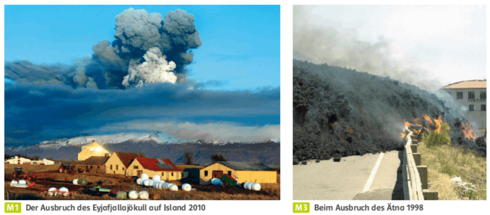
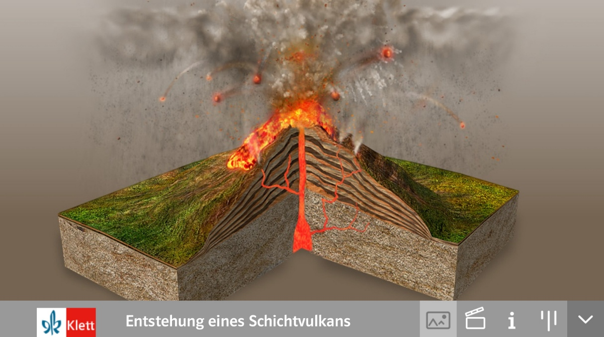
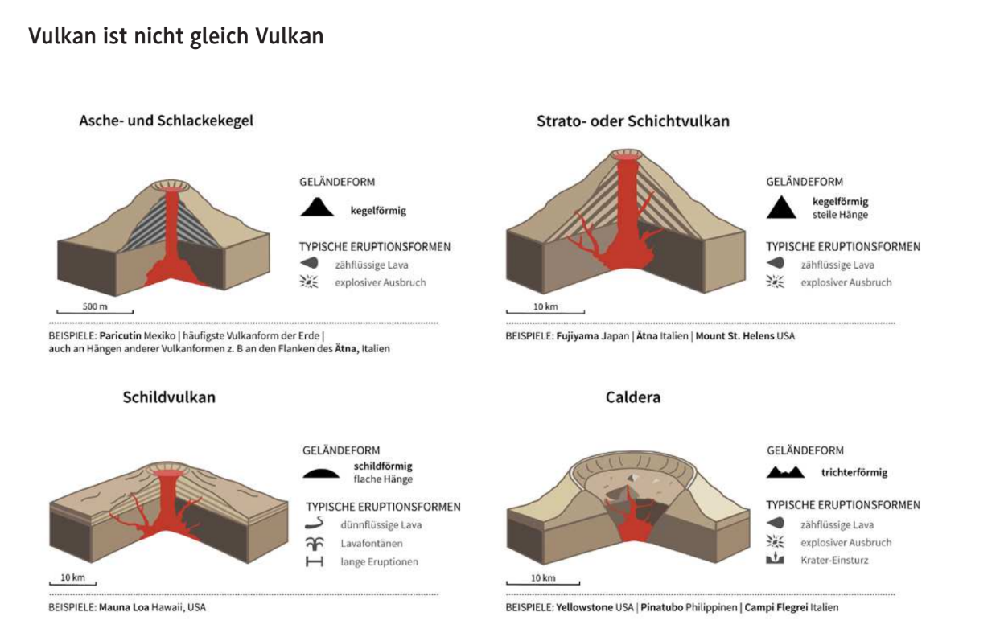
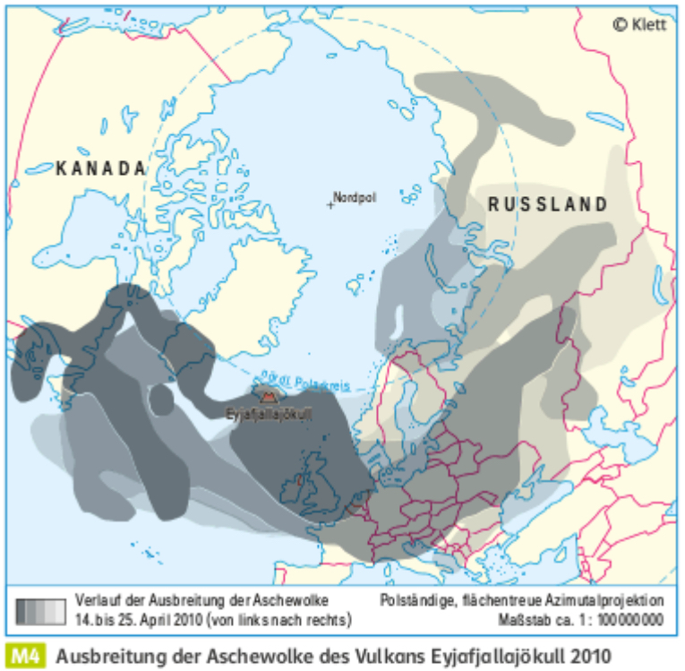
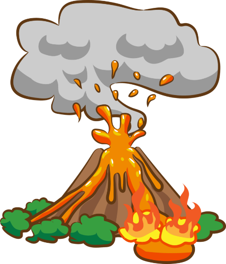
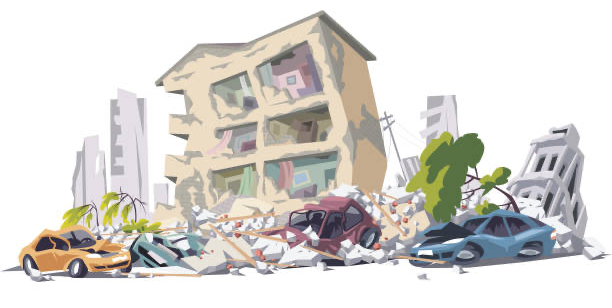

1Nenne die drei Arten, wie sich Erdplatten gegeneinander bewegen können.D
2„Die Erdplatten liegen fest und bewegen sich nie.“
Entscheide, ob die Aussage richtig oder falsch ist. Begründe deine Entscheidung.E

Was fällt euch auf? Was überrascht euch?
Beschreibe die Auswirkungen von Vulkanausbrüchen.

Sieh dir die Animation im GL-Buch (S. 38) an.
Beschreibe danach deinem Partner / deiner Partnerin den Weg des Magmas.E
Lies T1 und T2 im GL-Buch (S. 162–163). Du darfst dir den Text vorlesen lassen.
1Beschreibe die Vorgänge bei einem Vulkanausbruch in ganzen Sätzen. Nutze den Kasten mit Fachbegriffen.E–F
2Ordne den Zahlen und Buchstaben auf der Abbildung die richtigen Begriffe zu.D–E
3Vergleiche Schichtvulkane und Schildvulkane in der Tabelle (M5, M6).F
a)Vergleiche deine Lösungen zu den Aufgaben 1 bis 3 mit der Lösung an der Tafel.
b)Verbessere deine Fehler mit einer anderen Farbe.

Vergleiche Schichtvulkan und Schildvulkan nach Art des Ausbruchs, Lava, Form und Ausdehnung.F
| Schichtvulkan | Schildvulkan | |
|---|---|---|
| Ausbruch | explosiv, mit Asche | ruhig, Lava fließt aus |
| Lava | zähflüssig | dünnflüssig |
| Form | steiler Kegel aus Lava und Asche | flacher Schild |
| Ausdehnung | kleinere Fläche | sehr große Fläche |

Sprinteraufgabe
Stelle deine Lösung zu Aufgabe 5 (GL-Buch S. 163) vor.
●Vulkan- und Erdbebengebiete auf der Erde nennen.
●erläutern, inwiefern Europa von Naturkatastrophen betroffen sein kann.
●verschiedene Arten von Vulkanen unterscheiden.
●die Vorgänge bei einem Vulkanausbruch beschreiben.

VulkanLage (Kontinent, Land)
Tektonik der Region (Welche Platten bewegen sich wie?)
Aussehen (Höhe, Vulkanart, …)
Letzter Ausbruch und Schäden (Geschichte des Vulkans)
Aktueller Status (aktiv, inaktiv, ruhend, …)

ErdbebenLage (Kontinent, Land)
Tektonik der Region (Welche Plattenbewegungen verursachten das Beben?)
Stärke und Verlauf (gegebenenfalls Tsunamis in der Folge)
Schäden und Opferzahlen
Aktueller Status (Kämpft der Ort noch mit den Folgen?)
Vulkane
Ätna
Eyjafjallajökull
Hekla
Stromboli
Vesuv
Mauna Loa
Llaima
Mount St. Helens
Anak Krakatau
Sakurajima
Erdbeben
Türkei und Syrien 2023
Indischer Ozean 2004
Tōhoku-Erdbeben 2011
Karfreitagsbeben 1964
Valdivia 1960
Kamtschatka 1952